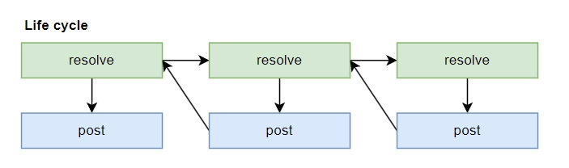
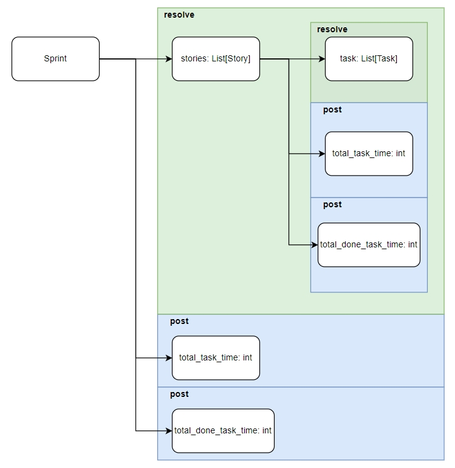

简介
pydantic-resolve 是一个通用的数据组合工具，包含了多层级的数据获，节点上的后处理，以及跨节点的数据传送。
以申明的方式组织管理数据，极大地提高代码的可读和可维护性。
示例代码中， 继承 BaseStory 和 BaseTask 来复用和扩展所需字段，为 BaseStory 添加了 tasks，task 内添加了 user 字段。
from pydantic_resolve import Resolver
from biz_models import BaseTask, BaseStory, BaseUser
from biz_services import UserLoader, StoryTaskLoader
class Task(BaseTask):
user: Optional[BaseUser] = None
def resolve_user(self, loader=Loader(UserLoader)):
return loader.load(self.assignee_id) if self.assignee_id else None
class Story(BaseStory):
tasks: list[Task] = []
def resolve_tasks(self, loader=Loader(StoryTaskLoader)):
# this loader returns BaseTask,
# Task inhert from BaseTask so that it can be initialized from it, then fetch the user.
return loader.load(self.id)
stories = [Story(**s) for s in await query_stories()]
data = await Resolver().resolve(stories)
通过提供初始的 BaseStory 数据:
pydantic-resolve 可以将其扩展为我们所申明的复杂结构数据：
[
{
"id": 1,
"name": "story - 1",
"tasks": [
{
"id": 1,
"name": "design",
"user": {
"id": 1,
"name": "tangkikodo"
}
}
]
},
{
"id": 2,
"name": "story - 2",
"tasks": [
{
"id": 2,
"name": "add ut",
"user": {
"id": 2,
"name": "john"
}
}
]
}
]
如果你有 GraphQL 经验，这篇文章提供了全面的讨论和比较：Resolver 模式：BFF 中比 GraphQL 更好的替代方案。
有别于和 ORM 或者 GraphQL 之类的数据获取方案， pydantic-resolve 的后处理能力，为构建业务数据提供了强大的解决方案， 避免了业务代码中经常实现的循环遍历， 定义临时变量等等容易影响代码可读性的处理逻辑，简化了代码量，提高了可维护性。
安装
从 pydantic-resolve v1.11.0 开始，同时支持 pydantic v1 和 v2。
文档
- 文档: https://allmonday.github.io/pydantic-resolve/v2/introduction/
- 示例仓库: https://github.com/allmonday/pydantic-resolve-demo
- 面向组合的开发模式: https://github.com/allmonday/composition-oriented-development-pattern
三步构建复杂数据
用 Agile 中的 Story， Task 为例：
1. 定义领域模型
建立实体关系作为基础数据模型（作为数据持久层， 这里的关系非常稳定， 不轻易变化。）
from pydantic import BaseModel
class BaseStory(BaseModel):
id: int
name: str
assignee_id: Optional[int]
report_to: Optional[int]
class BaseTask(BaseModel):
id: int
story_id: int
name: str
estimate: int
done: bool
assignee_id: Optional[int]
class BaseUser(BaseModel):
id: int
name: str
title: str
from aiodataloader import DataLoader
from pydantic_resolve import build_list, build_object
class StoryTaskLoader(DataLoader):
async def batch_load_fn(self, keys: list[int]):
tasks = await get_tasks_by_story_ids(keys)
return build_list(tasks, keys, lambda x: x.story_id)
class UserLoader(DataLoader):
async def batch_load_fn(self, keys: list[int]):
users = await get_tuser_by_ids(keys)
return build_object(users, keys, lambda x: x.id)
DataLoader 的实现支持各种数据获取方式，从数据库查询到微服务 RPC 调用。
2. 根据实际业务组合模型
比如我们需要构建 Story (包含 tasks 和 assinee, report), Task (包含 user) 这样的业务模型
可以通过继承 Base 模型和扩展字段的方式来实现， 这样的组合可以非常灵活，根据实际需要动态修改，但是依赖关系是被上一步的定义所约束的。
可以将其视为 ER 模型的子集。
from pydantic_resolve import LoaderDepend
class Task(BaseTask):
user: Optional[BaseUser] = None
def resolve_user(self, loader=LoaderDepend(UserLoader)):
return loader.load(self.assignee_id) if self.assignee_id else None
class Story(BaseStory):
tasks: list[Task] = []
def resolve_tasks(self, loader=LoaderDepend(StoryTaskLoader)):
return loader.load(self.id)
assignee: Optional[BaseUser] = None
def resolve_assignee(self, loader=LoaderDepend(UserLoader)):
return loader.load(self.assignee_id) if self.assignee_id else None
reporter: Optional[BaseUser] = None
def resolve_reporter(self, loader=LoaderDepend(UserLoader)):
return loader.load(self.report_to) if self.report_to else None
使用 ensure_subset 装饰器进行字段验证和一致性强制：
@ensure_subset(BaseStory)
class Story(BaseModel):
id: int
assignee_id: int
report_to: int
tasks: list[BaseTask] = []
def resolve_tasks(self, loader=LoaderDepend(StoryTaskLoader)):
return loader.load(self.id)
业务模型的稳定性和必要性验证完成后，后期可以使用专门的特殊查询来替换 DataLoader 以提升性能， 比如使用 join 的 orm relationship。
3. 实现视图层转换
面向具体业务的场景下， 通过数据持久层获取的数据并不能满足所有需要， 往往需要添加额外的计算字段，比如总和的计算或者过滤等等。
pydantic-resolve 的后处理能力就能精准满足这种场景。
利用 post_field 方法可以跨节点在祖先节点后子孙节点之间传递数据， 并且对已经获取的节点做额外的修改。
模式 1：跨层收集对象
使用 __pydantic_resolve_collect__ 可以将当前对象中的字段， 向上发送给申明了 related_users collector 的祖先节点。
from pydantic_resolve import LoaderDepend, Collector
class Task(BaseTask):
__pydantic_resolve_collect__ = {'user': 'related_users'} # 将 user 传播到收集器：'related_users'
user: Optional[BaseUser] = None
def resolve_user(self, loader=LoaderDepend(UserLoader)):
return loader.load(self.assignee_id)
class Story(BaseStory):
tasks: list[Task] = []
def resolve_tasks(self, loader=LoaderDepend(StoryTaskLoader)):
return loader.load(self.id)
assignee: Optional[BaseUser] = None
def resolve_assignee(self, loader=LoaderDepend(UserLoader)):
return loader.load(self.assignee_id)
reporter: Optional[BaseUser] = None
def resolve_reporter(self, loader=LoaderDepend(UserLoader)):
return loader.load(self.report_to)
# ---------- 后处理 ------------
related_users: list[BaseUser] = []
def post_related_users(self, collector=Collector(alias='related_users')):
return collector.values()
模式 2：计算新的字段
post 会在当前层的所有 resolve 方法，以及所有子孙层的 resolve， post 方法执行完毕之后触发， 因此对 post 方法来说， 默认所有的普通字段以及 resolve 字段的内容都是获取以及计算完毕的。 所以 post 方法可以用来对数据进行后处理， 比如计算所有 task 的 estimate 的总和。
class Story(BaseStory):
tasks: list[Task] = []
def resolve_tasks(self, loader=LoaderDepend(StoryTaskLoader)):
return loader.load(self.id)
assignee: Optional[BaseUser] = None
def resolve_assignee(self, loader=LoaderDepend(UserLoader)):
return loader.load(self.assignee_id)
reporter: Optional[BaseUser] = None
def resolve_reporter(self, loader=LoaderDepend(UserLoader)):
return loader.load(self.report_to)
# ---------- 后处理 ------------
total_estimate: int = 0
def post_total_estimate(self):
return sum(task.estimate for task in self.tasks)
模式 3：获取祖先节点的数据
使用 __pydantic_resolve_expose__ 可以将当前对象中的字段， 暴露给所有的子孙节点
在子孙节点中使用 ancestor_context['alias_name'] 的方式来读取。
from pydantic_resolve import LoaderDepend
class Task(BaseTask):
user: Optional[BaseUser] = None
def resolve_user(self, loader=LoaderDepend(UserLoader)):
return loader.load(self.assignee_id)
# ---------- 后处理 ------------
def post_name(self, ancestor_context): # 从父上下文访问 story.name
return f'{ancestor_context['story_name']} - {self.name}'
class Story(BaseStory):
__pydantic_resolve_expose__ = {'name': 'story_name'}
tasks: list[Task] = []
def resolve_tasks(self, loader=LoaderDepend(StoryTaskLoader)):
return loader.load(self.id)
assignee: Optional[BaseUser] = None
def resolve_assignee(self, loader=LoaderDepend(UserLoader)):
return loader.load(self.assignee_id)
reporter: Optional[BaseUser] = None
def resolve_reporter(self, loader=LoaderDepend(UserLoader)):
return loader.load(self.report_to)
4. 执行 Resolver
from pydantic_resolve import Resolver
stories: [Story(**s) for s in await query_stories()]
data = await Resolver().resolve(stories)
query_stories() 方法会返回一个 BaseStory 的数据数组， 我们可以将其转换成 Story 方法。
然后通过 Resolver() 实例对其进行自动转换， 就能获取完整的子孙节点和后处理数据了。
技术架构
pydantic-resolve 通过保持与实体关系模型的一致性，降低了数据组合的复杂性，增强了可维护性。 使用面向 ER 的建模方法可以提供 3-5 倍的开发效率提升和 50% 以上的代码减少。
pydantic-resolve 为 pydantic 和 dataclass 对象提供 resolve 和 post 方法钩子：
resolve：处理数据获取操作post：执行后处理转换
它实现了一个递归解析流程，每一个节点一次执行所有的 resolve 方法， post 方法， 以及 post_default_handler 方法， 当这个流程结束之后， 父节点的 resolve 方法执行结束。

使用 Sprint、Story 和 Task 关系层次结构来举例。
Sprint 的 resolve_stories 会被先执行，然后是 Story 中的 resolve_tasks 方法， Task 作为叶子节点结束之后， Story 的 post_task_time 和 post_done_task 会被执行， 然后 Story 的遍历就算结束了， 接下来会触发父节点 Sprint 的 post_task_time 和 post_total_done_task_time 方法。
可以发现， post 方法触发的时候， 已经默认所有相关的子孙节点处理获取/处理完毕的状态， 因此 resolve 方法的重构不会影响到 post 方法的逻辑 （比如删除 resolve 方法， 在上层节点就直接提供关联数据， 比如 orm 的 relationship 查询或者从 no-sql 中直接获取完整的树状数据）。
实现了 resolve 和 post 方法责任上的完全解耦， 比如处理从 GraphQL 获取的数据源时， 因为关联数据已经就绪， 就可以完全不实用 resolve 方法， 只用 post 方法来做各种后处理需求。

其中 DataLoader 消除了多级数据获取中容易出现的 N+1 查询问题。